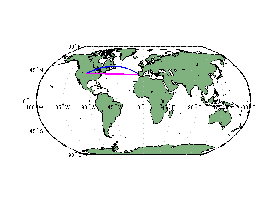
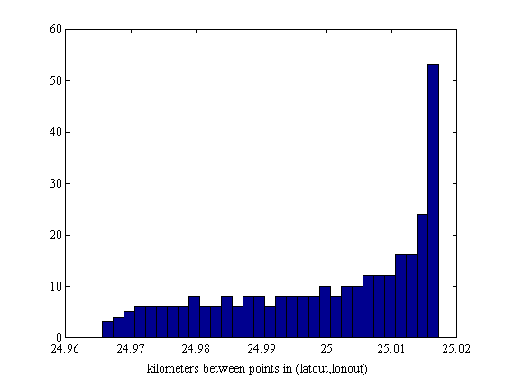
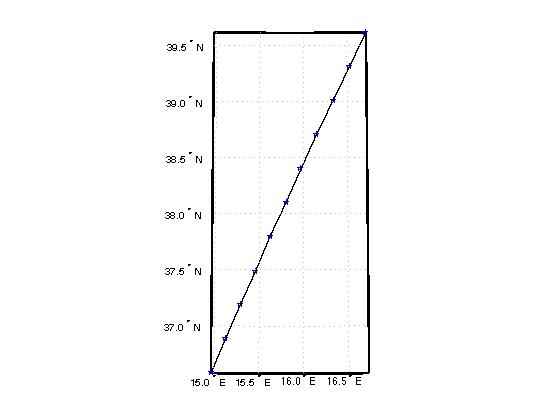
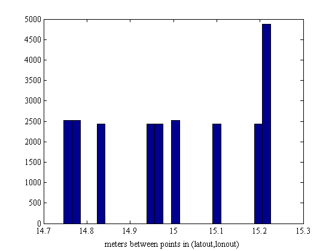

interpm2
This function employs the interpm function to densifiy lat/lon sampling in lines or polygons, but extends the available input units to include 'meters' or 'kilometers'. However, note that if units of meters or kilometers are specified, the resultant spacing will be only an approximation, due to an underlying approximation of the Earth's shape as a sphere of mean radius 6371 km.
Contents
Syntax
[latout,lonout] = interpm(lat,lon,maxdiff) [latout,lonout] = interpm(lat,lon,maxdiff,method) [latout,lonout] = interpm(lat,lon,maxdiff,method,units) [latout,lonout] = interpm(lat,lon,maxdiff,method,units,tolerance) [latout,lonout,deltadist] = interpm(...)
Description
[latout,lonout] = interpm(lat,lon,maxdiff) fills in any gaps in latitude (lat) or longitude (lon) data vectors that are greater than a defined tolerance maxdiff apart in either dimension. The angle units of the three inputs need not be specified, but they must be identical. latout and lonout are the new latitude and longitude data vectors, in which any gaps larger than maxdiff in the original vectors have been filled with additional points. The default method of interpolation used by interpm2 is linear.
[latout,lonout] = interpm(lat,lon,maxdiff,method) interpolates between vector data coordinate points using a specified interpolation method. Valid interpolation method strings are 'gc' for great circle, 'rh' for rhumb line, and 'lin' for linear interpolation.
[latout,lonout] = interpm(lat,lon,maxdiff,method,units) specifies the units used, where units can be 'degrees', 'radians', 'meters', or 'kilometers'. The default is 'degrees'. If units are meters or kilometers, the calculation will assume the Earth is a sphere of radius 6371 km.
[latout,lonout] = interpm(lat,lon,maxdiff,method,units,tolerance) specifies an amount of acceptable deviation between maxdiff and the average distance between output points. Due to an approximation of the Earth as a sphere, the first solution this function calculates may not yield points exactly maxdiff apart. If, however, you specify maxdiff = 15 meters and tolerance = 0.010, the function will keep trying until it finds a solution where the average distance between points is 15+/-0.010 meters. If no tolerance is declared a value corresponding to 0.1% of maxdiff will be assumed.
[latout,lonout,deltadist] = interpm(...) returns the mean distance deltadist between output points given by latout and lonout. Units of deltadist are in meters unless input units are kilometers, in which case deltadist units are in kilometers.
Example 1: Draw a great circle route from Denver to Lisbon at 25 km spacing; compare to linear
and rhumb line paths:
denver = [39.739167, -104.984722]; % city coordinates in the form [lat lon] lisbon = [38.713811, -9.139386]; tic [lat25km,lon25km] = interpm2([denver(1) lisbon(1)],[denver(2) lisbon(2)],25,'gc','km'); toc figure worldmap('world') land = shaperead('landareas', 'UseGeoCoords', true); geoshow(land, 'FaceColor', [0.5 0.7 0.5]) plotm(lat25km,lon25km,'b','linewidth',2) % Now compare great circle path to linear and rhumb lines: [lat25rh,lon25rh] = interpm2([denver(1) lisbon(1)],[denver(2) lisbon(2)],25,'rh','km'); [lat25lin,lon25lin] = interpm2([denver(1) lisbon(1)],[denver(2) lisbon(2)],25,'lin','km'); plotm(lat25rh,lon25rh,'r','linewidth',2) plotm(lat25lin,lon25lin,'m','linewidth',2)
Elapsed time is 0.293733 seconds.
Unfortunately, this function cannot give perfectly equally-spaced points along a track, but it tries its best. The deltadist optional output will tell you the average distance between points, but you may still wonder how much distances vary between points. You can visualize this with a histogram:
distancesBetweenPoints = distance(lat25km(1:end-1),lon25km(1:end-1),... lat25km(2:end),lon25km(2:end),referenceEllipsoid('wgs 84')); figure hist(distancesBetweenPoints/1000,31) xlabel('kilometers between points in (latout,lonout)')
Example 2: Densify a path to 15-meter spacing along a great circle path
In this example, a path is given by the points (lat,|lon|) and you want a great circle interpolation to 15 meter spacing. Further, you insist that the distance between points declared by maxdiff must meet the requirement 15 +/- 0.005 meters. In other words you want the average distance between points to be within 5 mm of 15 meters.
lat = [39.61 39.31 39.01 38.71 38.40 38.10 37.80 37.49 37.19 36.89 36.58]; lon = [16.72 16.53 16.34 16.15 15.97 15.80 15.62 15.46 15.29 15.13 14.97]; [lat15m,lon15m,deltadist] = interpm2(lat,lon,15,'gc','meters',.005); figure worldmap([min(lat) max(lat)],[min(lon) max(lon)]) plotm(lat,lon,'bp') % original data plotm(lat15m,lon15m,'k.') % data densified to ~15 m spacing
Now let's check distance between the first two densified points. We can compare this to the average distance between points deltadist and look at a distribution of distances between points.
distance(lat15m(1),lon15m(1),lat15m(2),lon15m(2),referenceEllipsoid('wgs 84'))
ans = 15.2010
deltadist distancesBetweenPoints = distance(lat15m(1:end-1),lon15m(1:end-1),... lat15m(2:end),lon15m(2:end),referenceEllipsoid('wgs 84')); figure hist(distancesBetweenPoints,25) xlabel('meters between points in (latout,lonout)')
deltadist = 14.9985
Note that although the mean distance between points deltadist = 14.9985, not all distances between points are within 5 mm of 15 m. Unfortunately, interpm calculates equidistant points between each waypoint that you enter as lat and lon.
Example 3: Use interpm2 exactly like interpm.
Here is an example from the interpm documentation, but in this case interpm2 is used instead.
lat = [1 2 4 5]; lon = [7 8 9 11]; [latout,lonout] = interpm2(lat,lon,1); [latout lonout]
ans =
1.0000 7.0000
2.0000 8.0000
3.0000 8.5000
4.0000 9.0000
4.5000 10.0000
5.0000 11.0000
Revision History
The first version of this file was uploaded to the Mathworks File Exchange site on 11 June 2014. On 16 June 2014 the sixth input argument was changed from percentAcceptableError to an absolute distance tolerance.
Author Info
This script was created by Chad A. Greene of the Institute for Geophysics at the University of Texas at Austin on June 11, 2014. In his free time, Chad enjoys gardening and woodworking.